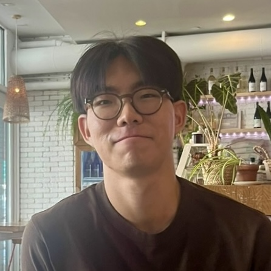

Heewon Hwang [heewon0120@yonsei.ac.kr]
MS/PhD in Finance, Yonsei School of Business
I am a graduate student at Yonsei University, researching under the guidance of Prof. Jun Kyung Auh. My research interest lies in Asset Pricing, with a focus on Institutional Investors and Investor Demand.
Footnotes